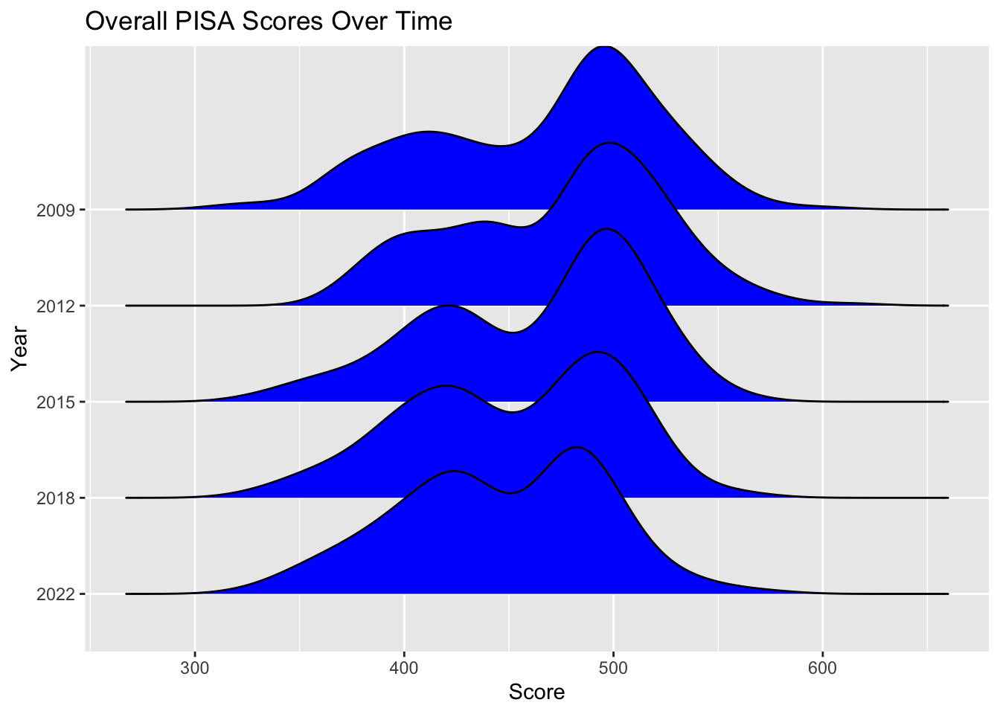
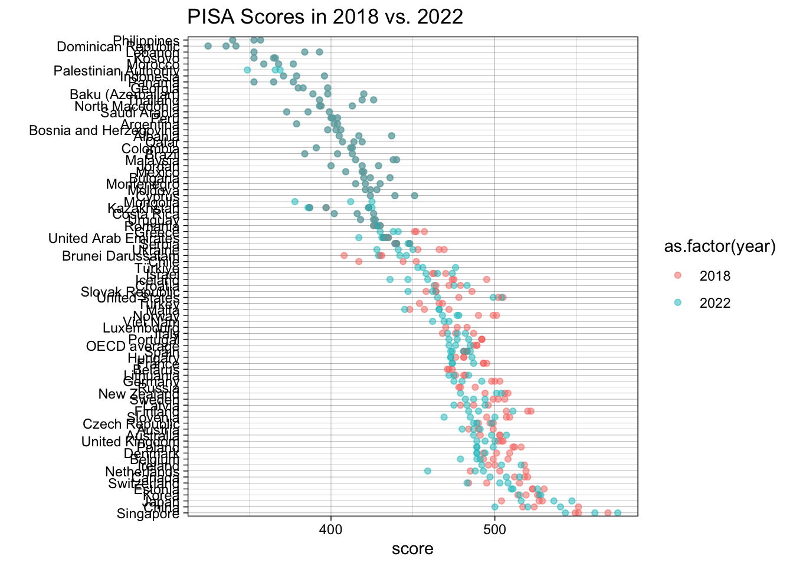
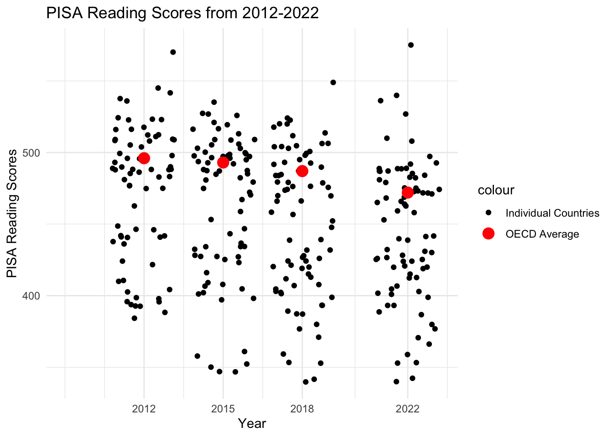
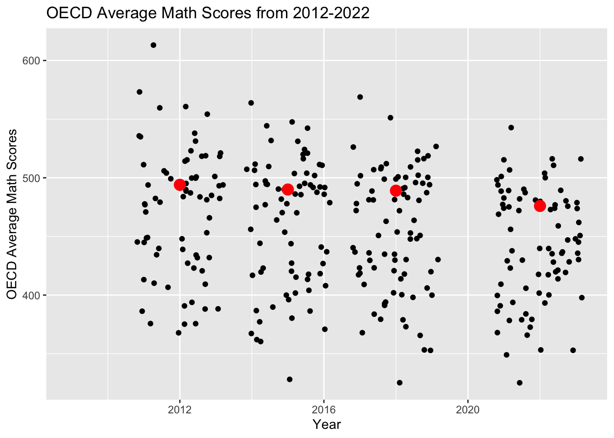
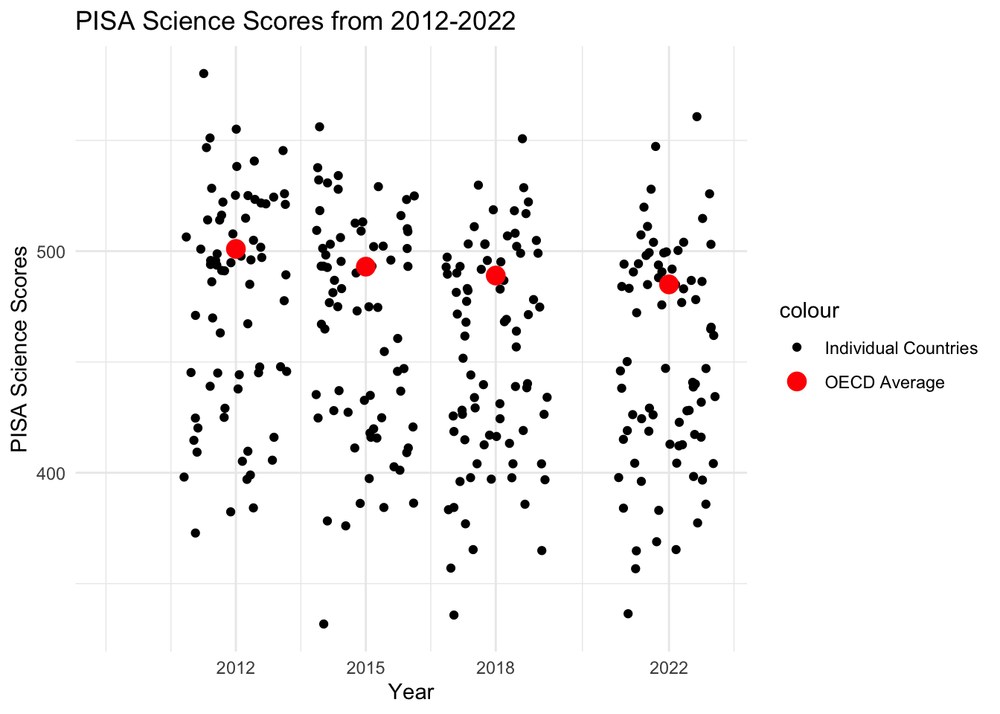
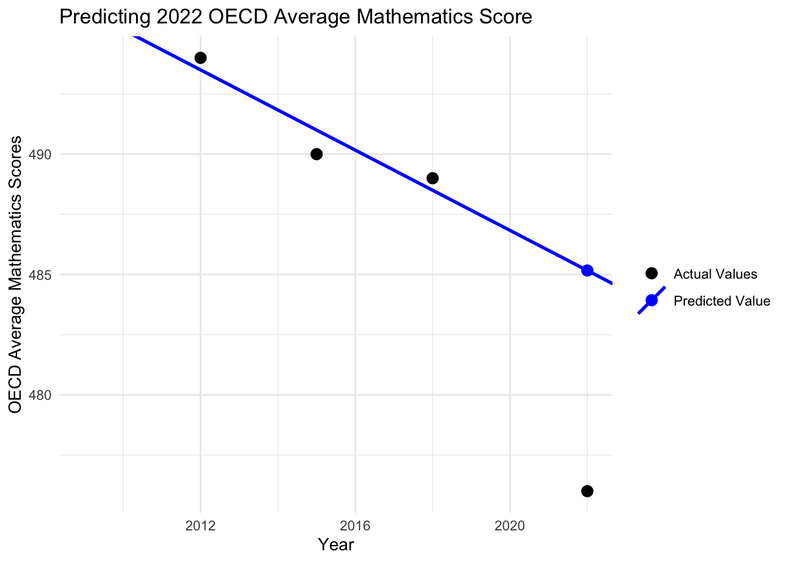
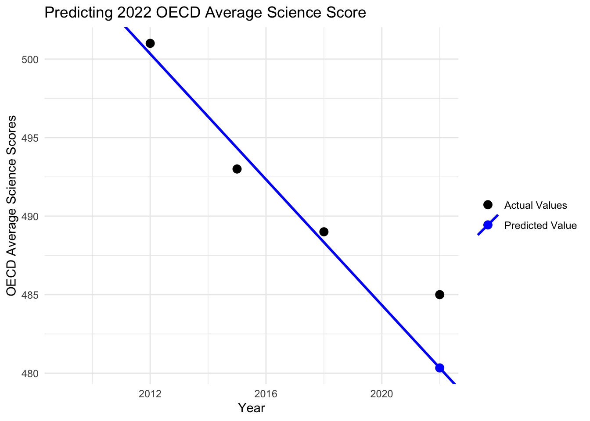
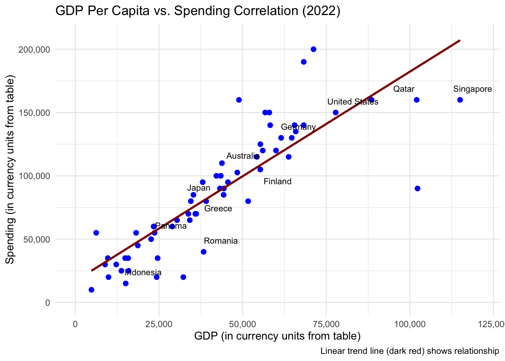
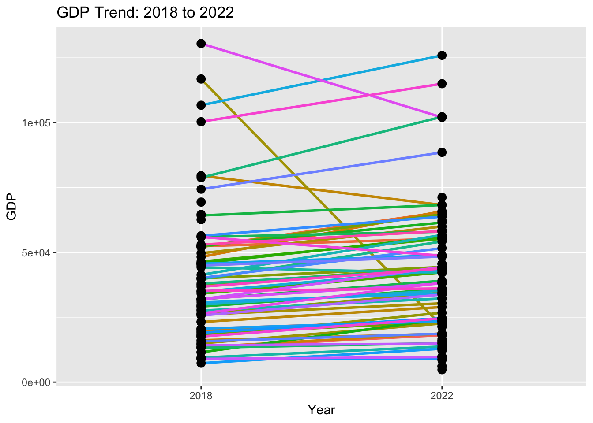
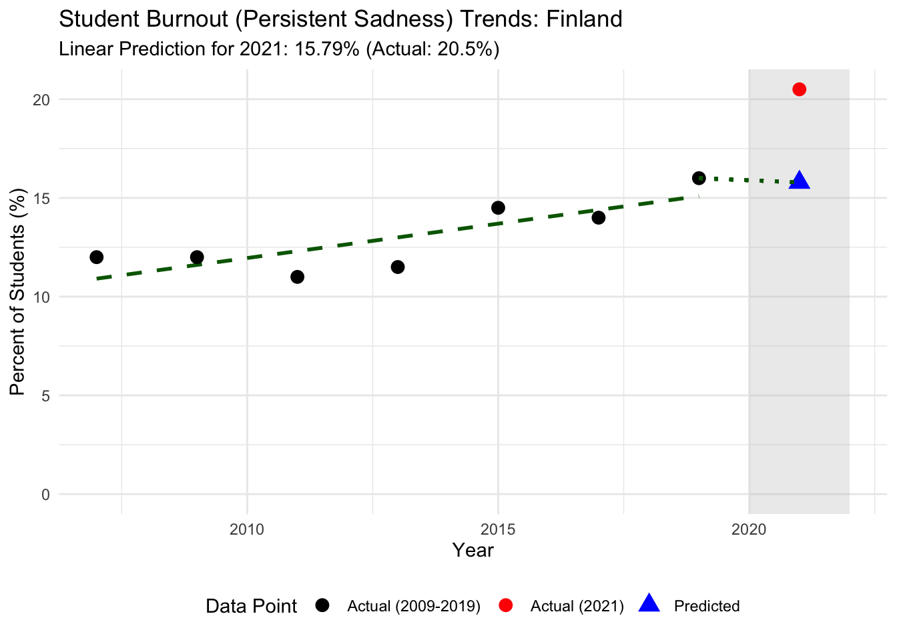

Our main research question is “Did COVID affect educational outcomes?” To answer this, we utilized the PISA scores from 2012 to 2022. The PISA is a standardized test developed by the OECD for high schoolers to compare educational outcomes across the world. To effectively examine the pandemic’s effect on education, we employed the funnel method, which involves examining high-level trends in the data. From there, we began to notice patterns, ask more questions, and gather additional data to further investigate our primary mission.
3.0.2 Global Educational Trends
Let’s now take a look at the PISA data:
Code
ggplot(all_scores_long, aes(x = score, y =fct_reorder(as.factor(year), year, .desc =TRUE))) +geom_density_ridges(fill ="blue") +ggtitle("Overall PISA Scores Over Time") +ylab("year")

Code
ylab("Year") +xlab("Score")
NULL
In 2009, the distribution is slightly bimodal, with a shallow peak centered at score = 425 and a taller peak at score = 475. As the years pass, the peaks are slowly becoming closer in size. We cannot determine exactly what is changing, but some explanations could be that: - Countries from the “right peak” are getting worse scores, thus becoming a part of the left peak - The different countries that are participating each year have different distributions of scores, and so their participation/lack thereof changes the overall distribution we see
The second explanation is less likely since we do see a trend, and there is a low possibility that the participation/non-participation of countries each year created a very clear trend. However, let’s test this out by looking at each country’s individual change.
Code
# all_scores_long |>filter(year >2017) |>filter(!is.na(score)) |>ggplot(aes(x = score, y =fct_reorder2(country, year=="2022", score, .desc=FALSE), color=as.factor(year))) +geom_point(alpha=0.5, size=3) +ggtitle("PISA Scores in 2018 vs. 2022") +ylab("") +theme_linedraw() +labs(color ="Year")

Countries with scores below 450 have not greatly changed their PISA scores, as shown by the overlapping 2018 and 2022 points. The countries with scores greater than 450 do not have overlapping points; thus, their scores have changed. Looking closer, we see that the 2022 dots are mostly to the left of the 2018 dots, indicating that their scores went down. This supports the idea that higher-scoring countries are scoring worse and thus moving to the lower peak.
We now know that, at least from 2018 to 2022, the PISA scores decreased. Let’s check the entire trend.
Code
# Plotting scoresggplot() +geom_point(data =filter(all_reading_scores_long, year >2010), aes(x=year, y=score, color ="Individual Countries"), position='jitter') +geom_point(data =filter(all_reading_scores_long, country =="OECD average"), aes(x = year, y = score, color ="OECD Average"), size =4) +scale_color_manual(values =c("Individual Countries"="black", "OECD Average"="red")) +scale_x_continuous(breaks =c(2012, 2015, 2018, 2022)) +labs(x ="Year", y ="PISA Reading Scores") +ggtitle("PISA Reading Scores from 2012-2022") +theme_minimal()

Code
ggplot() +geom_point(data =filter(all_math_scores_long, year >2010), aes(x=year, y=score, color ="Individual Countries"), position='jitter') +geom_point(data =filter(all_math_scores_long, country =="OECD average"), aes(x = year, y = score, color ="OECD Average"), size =4) +scale_color_manual(values =c("Individual Countries"="black", "OECD Average"="red")) +scale_x_continuous(breaks =c(2012, 2015, 2018, 2022)) +labs(x ="Year", y ="PISA Math Scores") +ggtitle("PISA Math Scores from 2012-2022") +theme_minimal()

Code
ggplot() +geom_point(data =filter(all_science_scores_long, year >2010), aes(x=year, y=score, color ="Individual Countries"), position='jitter') +geom_point(data =filter(all_science_scores_long, country =="OECD average"), aes(x = year, y = score, color ="OECD Average"), size =4) +scale_color_manual(values =c("Individual Countries"="black", "OECD Average"="red")) +scale_x_continuous(breaks =c(2012, 2015, 2018, 2022)) +labs(x ="Year", y ="PISA Science Scores") +ggtitle("PISA Science Scores from 2012-2022") +theme_minimal()

Code
# Change the x axis to only show the years we wanna see
Without the context of previous years, we wouldn’t have known that every year, all PISA scores have been dropping slowly. This graph shows that the scores are slowly decreasing over time. However, it is difficult to see whether the 2022 scores are significantly lower than the trend. Let’s try to model where the average for 2022 should be against where it actually is.
Code
# Reading Predictionsreading_scores_train <- all_reading_scores_long |>filter(year <2020, country =="OECD average")reading_model <-lm(score ~ year, data = reading_scores_train)# Predict for 2022predicted_value <-predict(reading_model, newdata =data.frame(year =2022))# Plot new modelggplot() +geom_point(data =filter(all_reading_scores_long, country =="OECD average"), aes(x = year, y = score, color ="Actual Values"), size =3) +geom_point(data =data.frame(year =2022, score = predicted_value), aes(x = year, y = score, color ="Predicted Value"), size =3) +geom_abline(aes(intercept =coef(reading_model)[1], slope =coef(reading_model)[2], color ="Predicted Value"), linewidth =1) +scale_color_manual(values =c("Actual Values"="black", "Predicted Value"="blue")) +labs(x ="Year", y ="OECD Average Reading Scores", color ="") +ggtitle("Predicting 2022 OECD Average Reading Score") +theme_minimal()
Code
math_scores_train <- all_math_scores_long |>filter(year <2020, country =="OECD average")math_model <-lm(score ~ year, data = math_scores_train)# Predict for 2022predicted_value <-predict(math_model, newdata =data.frame(year =2022))# Plot new modelggplot() +geom_point(data =filter(all_math_scores_long, country =="OECD average"), aes(x = year, y = score, color ="Actual Values"), size =3) +geom_point(data =data.frame(year =2022, score = predicted_value), aes(x = year, y = score, color ="Predicted Value"), size =3) +geom_abline(aes(intercept =coef(math_model)[1], slope =coef(math_model)[2], color ="Predicted Value"), linewidth =1) +scale_color_manual(values =c("Actual Values"="black", "Predicted Value"="blue")) +labs(x ="Year", y ="OECD Average Mathematics Scores", color ="") +ggtitle("Predicting 2022 OECD Average Mathematics Score") +theme_minimal()

Code
# Science Predictionsscience_scores_train <- all_science_scores_long |>filter(year <2020, country =="OECD average")science_model <-lm(score ~ year, data = science_scores_train)# Predict for 2022predicted_value <-predict(science_model, newdata =data.frame(year =2022))# Plot new modelggplot() +geom_point(data =filter(all_science_scores_long, country =="OECD average"), aes(x = year, y = score, color ="Actual Values"), size =3) +geom_point(data =data.frame(year =2022, score = predicted_value), aes(x = year, y = score, color ="Predicted Value"), size =3) +geom_abline(aes(intercept =coef(science_model)[1], slope =coef(science_model)[2], color ="Predicted Value"), linewidth =1) +scale_color_manual(values =c("Actual Values"="black", "Predicted Value"="blue")) +labs(x ="Year", y ="OECD Average Science Scores", color ="") +ggtitle("Predicting 2022 OECD Average Science Score") +theme_minimal()

These graphs depict the trend for 2012-2018, with the predicted value for 2022 given that trend, and the actual value for 2022. For reading and math, there is, unsurprisingly, a clear difference between the predicted and actual scores; the true 2022 scores were much lower than the predicted. One shock was that science scores in 2022 were actually better than expected.
Given only three data points, it is difficult to conclude a significant difference for 2022; however, these data points are summarized from the millions of students globally who took the exam. Though we do not have several years of data, the data we do have summarizes millions of data points, which should give some assurance to the credibility of the plot. The “models” created had no intention of predicting future values accurately; they serve as a visual representation of how large a jump in scores there is from before the pandemic to after.
Based on these graphs, we can conclude that there was a dip in educational outcomes from 2018 to 2022.
3.0.3 Other factors
We’ve shown there was a dip from 2018 to 2022, and although the pandemic was the most significant event during that time, there is no guarantee that it was the only factor causing the dip. Let’s take a look at some other factors.
One major indicator of education outcomes is educational expenditure.
This graph clearly shows a strong linear relationship between the PISA scores and educational spending on the left. Some outliers do exist, indicating that spending is not the only indication of higher scores. Qatar spends significantly more money per student, but its students do not score higher than even the OECD average. But overall, we can conclude that there is a positive correlation between PISA scores and educational spending.
Educational expenditure by each country is based on several factors, including the country’s general wealth. If a country is not wealthy, it will not be able to spend as much on its students. Let’s check if GDP and educational spending are correlated.
Code
GDP_precovid<-read.csv('data/2018_GDP.csv')spending_precovid<-read.csv('data/2018_Spending.csv')merged_data <-merge(GDP_precovid, spending_precovid, by ="Country")
Code
#2018target_countries <-c("United States","Japan","Qatar","Greece","Indonesia","Germany","Australia","Romania","Finland","Singapore","Luxembourg","Cyprus","Panama")ggplot(merged_data, aes(x = GDP, y = Spending)) +geom_point(color ="blue", size =2) +# geom_abline(intercept = 0, slope = 1, linetype = "dashed", color = "grey50") +geom_smooth(method ="lm", se =FALSE, color ="darkred") +geom_text_repel(data = merged_data[merged_data$Country %in% target_countries, ], aes(label = Country), size =3, segment.color ='grey50', segment.size =0.2, box.padding =unit(0.5, "lines"), point.padding =unit(0.5, "lines"),force =2 ) +scale_x_continuous(labels =label_number(big.mark =","), limits =c(0, max(merged_data$GDP) *1.05) ) +scale_y_continuous(labels =label_number(big.mark =","), limits =c(0, max(merged_data$Spending) *1.05) ) +labs(title ="GDP Per Capita vs. Spending Correlation (2018)",x ="GDP Per Capita",y ="Spending (in currency units from table)",caption ="Linear trend line (dark red) shows relationship. Dashed line (grey) is y=x." ) +theme_minimal()

Code
# dashed is y = x
GDP and educational spending seem to be highly linearly correlated. There are some outliers that suggest non-constant variance, but there are not enough of those points for the constant variance assumption to be broken.
Code
GDP_postcovid<-read.csv('data/2022_GDP.csv')spending_postcovid<-read.csv('data/2022_Spending.csv')merged_data2 <-merge(GDP_postcovid, spending_postcovid, by ="Country")names(merged_data2)[2] <-"GDP"
Code
target_countries <-c("United States","Japan","Qatar","Greece","Indonesia","Germany","Australia","Romania","Finland","Singapore","Luxembourg","Cyprus","Panama")ggplot(merged_data2, aes(x = GDP, y = Spending)) +geom_point(color ="blue", size =2) +geom_abline(intercept =0, slope =1, linetype ="dashed", color ="grey50") +geom_smooth(method ="lm", se =FALSE, color ="darkred") +geom_text_repel(# Filter data to only label the target countriesdata = merged_data2[merged_data2$Country %in% target_countries, ], aes(label = Country), size =3, segment.color ='grey50', segment.size =0.2, box.padding =unit(0.5, "lines"), point.padding =unit(0.5, "lines"),force =2 ) +scale_x_continuous(labels =label_number(big.mark =","),limits =c(0, max(merged_data2$GDP) *1.05) ) +scale_y_continuous(labels =label_number(big.mark =","),limits =c(0, max(merged_data2$Spending) *1.05) ) +# Labels and Themelabs(title ="GDP Per Capita vs. Spending Correlation (2022)",x ="GDP (in currency units from table)",y ="Spending (in currency units from table)",caption ="Linear trend line (dark red) shows relationship" ) +theme_minimal()
In both 2018 and 2022, GDP per Capita and PISA scores are positively correlated. We can connect this correlation to the previous graphs regarding GDP per capita and educational expenditure. If a country has more money to spare and is doing well economically, then it has more resources for education. If there are more resources, then students are better prepared for exams such as PISA, and will therefore perform well on the exam.
Some specifics: We can see that from 2018-2022, Singapore’s GDP per capita and PISA scores increased. However, the United States saw an increase in GDP per Capita and a decrease in PISA scores. In the plots above comparing GDP and spending on education, we see that the USA spends generously on its students’ education. Other factors, including the emotional stress of the pandemic, could have yielded lower scores despite the economic resurgence by 2022.
We found that educational spending and GDP per capita are also factors in PISA outcomes. Educational spending also depends heavily on GDP, and we know GDP took a dip during the pandemic. Thus, several typical factors for educational outcomes were also affected by the pandemic. We cannot guarantee the pandemic is the sole cause of the educational dip from 2018 to 2022, but several other factors to educational outcomes were also affected by the pandemic, indicating that the pandemic likely had the largest effect.
3.0.4 CASE STUDY: FINLAND
Finland’s transition to distance learning went well, but the switch meant that students no longer had equal access to the resources provided at school, and their resources became limited by their homes. In other words, any difference or inequity of educational support in their home life directly affected their educational performance/outcomes.
Code
data_cynicism <-read.csv("data/cynicism_finland.csv")data_cynicism <- data_cynicism |>rename(High_school =colnames(data_cynicism)[4])data_cynicism_long <- data_cynicism |>pivot_longer(cols =c(High_school),names_to ="School_Type",values_to ="Percentage")color_map <-c("High_school"="#6495ED")label_map <-c("High_school"="High school grades 10 and 11")cynicism_plot <-ggplot(data_cynicism_long, aes(x = Year, y = Percentage, color = School_Type)) +geom_rect(aes(xmin =2020, xmax =Inf, ymin =-Inf, ymax =Inf,fill ="Pandemic period"),inherit.aes =FALSE,alpha =0.25) +geom_vline(aes(xintercept =2020, linetype ="Pandemic starts"),linewidth =1) +geom_line(linewidth =1) +geom_point(size =3) +scale_fill_manual(name =NULL,values =c("Pandemic period"="grey70") ) +scale_linetype_manual(name =NULL,values =c("Pandemic starts"="dashed") ) +scale_color_manual(values = color_map, labels = label_map,name =NULL ) +scale_x_continuous(breaks = data_cynicism$Year,labels =c("2007", "2009", "2011", "2013", "2017", "2019", "2021"),expand =expansion(add =c(0.5, 0.5)) ) +scale_y_continuous(limits =c(0, 40),breaks =seq(0, 40, by =5) ) +labs(title ="Percent of Students Feeling Cynical Over the Years",x ="Year",y ="Percentage of students reporting cynicism" ) +theme_minimal() +theme(legend.position ="bottom",axis.title =element_text(size =12, face ="bold"),plot.background =element_rect(fill ="white", color =NA),panel.background =element_rect(fill ="white", color =NA),panel.grid.major =element_line(color ="grey80"),panel.grid.minor =element_blank() )print(cynicism_plot)

As shown in the graph above, the percentage of students reporting cynicism prior to the pandemic was fairly stable. If you compare that with the jump from 2019 (just before the pandemic) to 2021 (just after), there is a sharp increase. Just visually, you can see that stark increase. We could hypothesize that the reasoning behind this was the increased emotional strain on students during the pandemic.
We can see the same stark increase in the percentage of burnt-out students in this graph as well. Again, the percentage of burnout students remains fairly constant until the jump from 2019 to 2021. The actual burnt-out value for 2021 is far higher than the predicted value, indicating that the difference is likely significant.
The graph above shows a sharp dip in scores from 2018 to 2022 for Finland. This aligns with the previous PISA score graphs for all countries, which also showed a significant dip from 2018 to 2022. From the cynicism and burnout plots, we can hypothesize that students felt more cynical due to their lockdown lives and burnt out by the strain of living through the global pandemic.
The transition to distance learning during the pandemic led to decreased engagement among students, teachers, and principals. This shift significantly increased stress and burnout for educators, with principals feeling the effects of their teachers’ struggles. Teachers found it difficult to compensate for the inconsistent support students received back home. Students were not getting the support that they needed.
Conclusion: The switch to distance learning was well-organized, but it ultimately worsened fairness in education and removed the conditions students needed to learn and feel supported.
3.0.5 CASE STUDY: USA
Code
df <-read.csv("data/school_modality.csv") |>mutate(Learning_Modality =as.factor(Learning_Modality),Year =as.factor(Year))counts <- df |>group_by(Year, Learning_Modality) |>summarize(Freq =sum(Count), .groups ="drop")tbl <-xtabs(Freq ~ Year + Learning_Modality, data = counts)colors_theme <-c("#FFB6B9", "#FAE3D9", "#61C0BF")mosaic( tbl,direction =c("v", "h"),highlighting ="Learning_Modality",highlighting_fill = colors_theme,main ="Learning Modality by Year")

To create this mosaic plot, we used the “K-12 public and independent charter school districts for the 2021-2022 school year and the Fall 2022 semester, from August 2021 – December 2022” data. From 2020 to 2022, the USA changed learning modality due to the pandemic. According to the mosaic plot above, the majority of schools were either in-person or hybrid. By the end of 2022, almost all schools went back to in-person. Considering the severity of the pandemic, the percentage of in-person and hybrid schools is worrisome. It does not seem like the U.S. was proactive in moving schools to remote learning for the sake of safety.
It is true that the U.S. was able to get most schools to be remote, according to the National Center for Education Statistics. However, many schools took some time to implement this, due to backlash from the public about the effects of remote learning, as well as whether COVID was dangerous enough to make such a drastic decision regarding education.
We can also observe a sharp jump in the percentage between 2019 and 2021. Prior to 2019, the year-to-year changes were relatively modest, but the increase during this period is unusually large. The model’s predicted value for 2021 is considerably lower than the actual data point, highlighting the impact of the pandemic.
The graph above displays a sharp drop in scores from 2018 to 2022 for the USA, similar to Finland. We can conclude the same things we did for Finland, with students feeling very cynical about their lives and burnt out by the strain that came from surviving a global pandemic, hence the drop in scores. According to the Annie E. Casey Foundation, in the U.S., the abrupt transition to remote learning significantly disrupted student education by reducing instructional time and engagement, leading to difficulties with focus and a reluctance to seek help. This shift was also caused by a digital divide, which negatively affected marginalized students because of unequal internet access, increasing dropout rates. There was a widespread mental health crisis, marked by higher rates of stress, anxiety, and depression. Additionally, teachers continuously had to rapidly adjust and trim their curricula due to limited time.